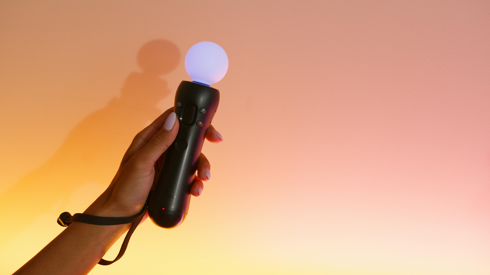

This is our console, the Cran sphere! The greatest piece of technology the gaming industry has ever seen. Using our console you'll be able to access our master piece, Cran, the video game. With this console you will never suffer any sort of performance issue while playing Cran. The sole purpose of this device is to play our game so users will have access to all the best settings and quality of life innovations we bring.

The hardware we have fit inside the beautiful orb will have all the tech nerds drooling. For thoes who don't know much about the stuff and don't really care just know that you won't have to play with any settings trying to find good performance as everything will be put on the highest quality.
Our controllers are super cool, buy them. Seriously. Designed with comfort in mind, each controller features a smooth ergonomic grip that feels like it was molded by ancient artisans who somehow predicted the shape of your hands. Every button has the perfect “click,” tested by our team of totally real scientists who pressed each one thousands of times while arguing about lore. Wireless, durable, and capable of surviving at least three rage-throws (not tested with kyle), this controller gives you the precision and reliability you need to dominate every corner of Cran's world. If the Sphere is the heart of the system, then this is the sword you wield to conquer it.
Only $1,299